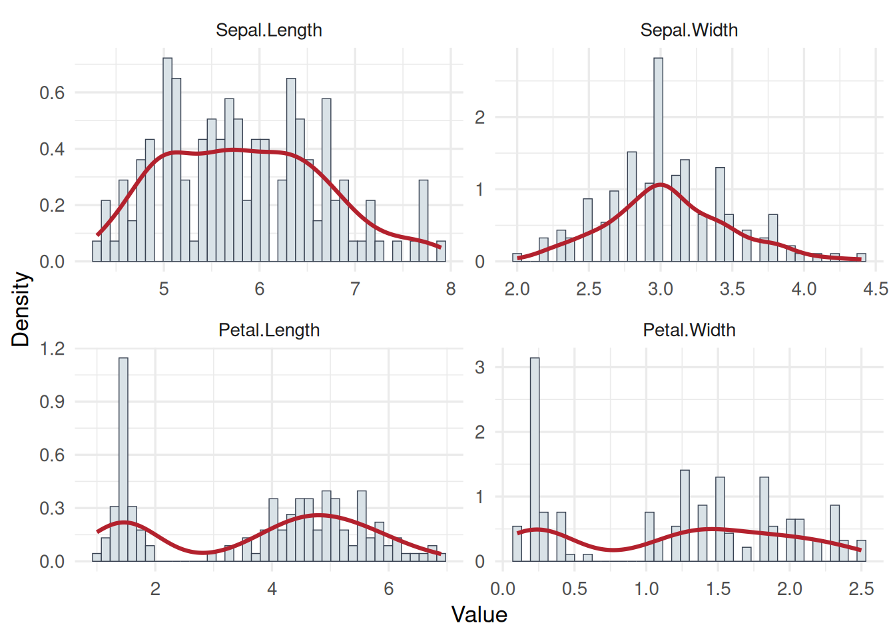
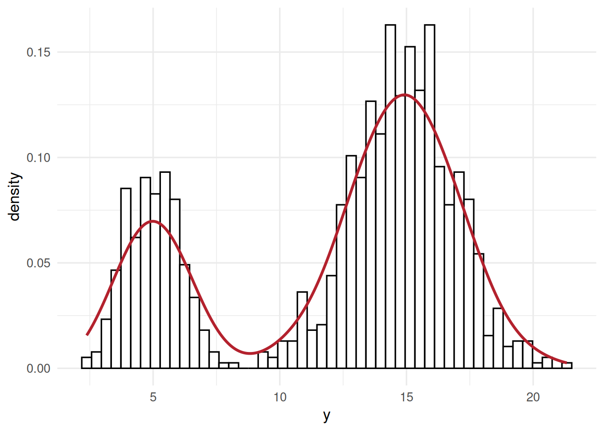
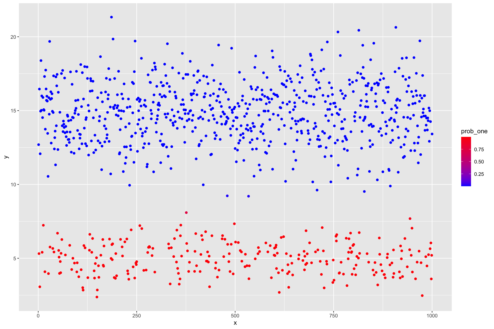
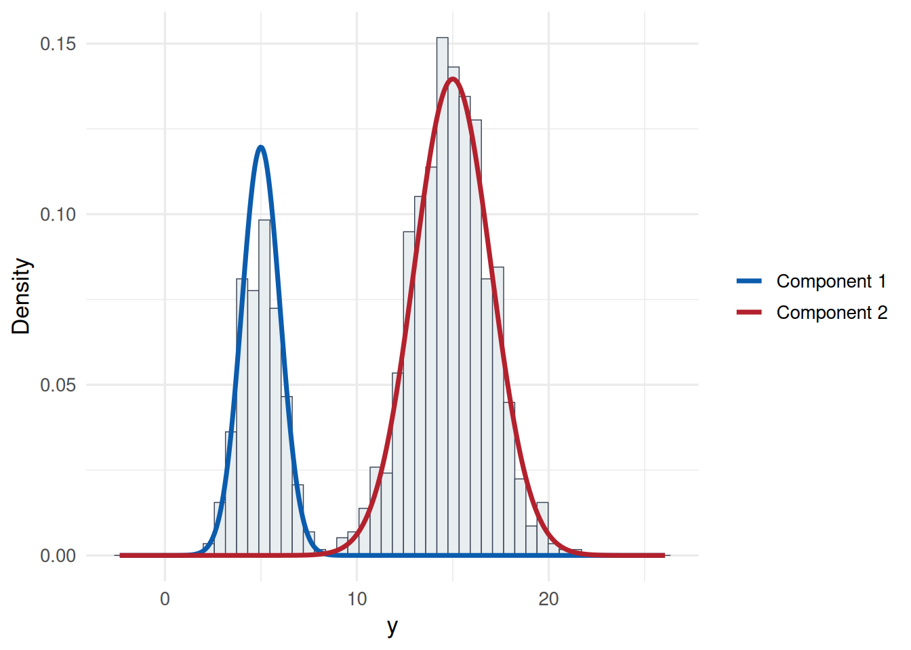
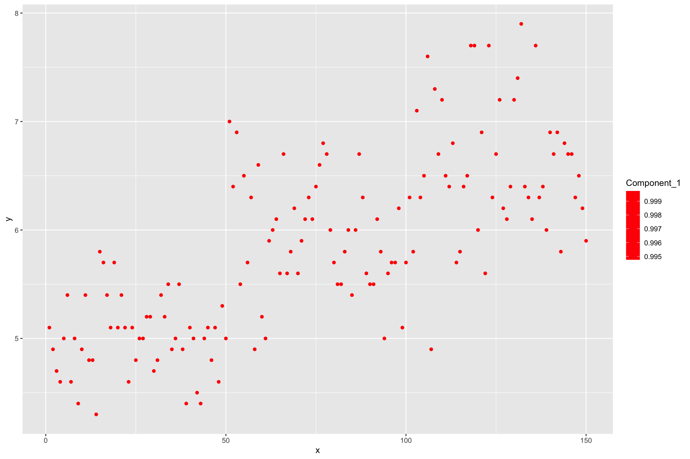
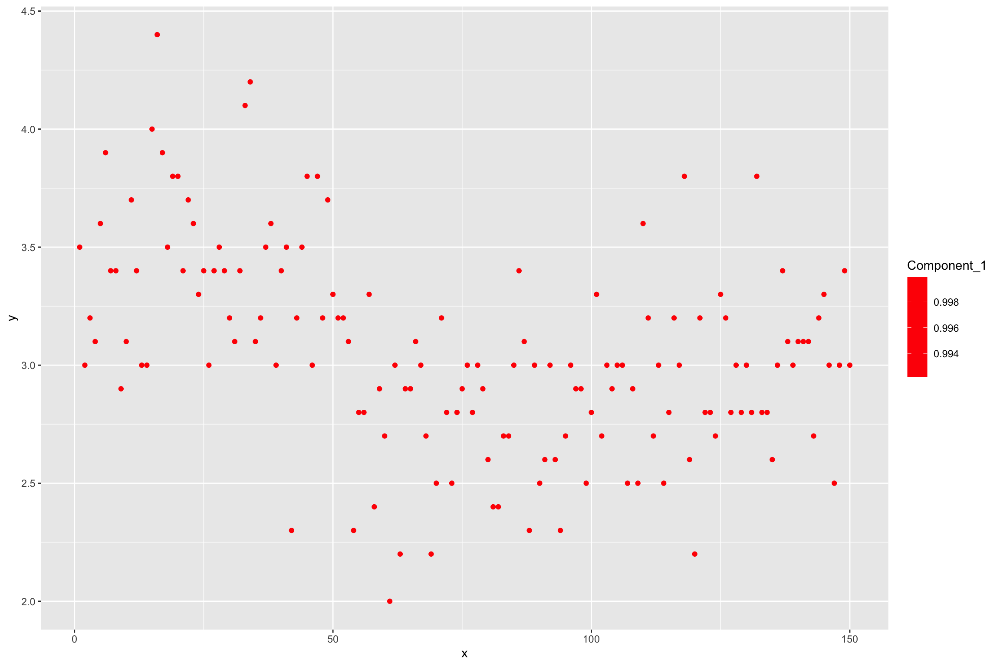
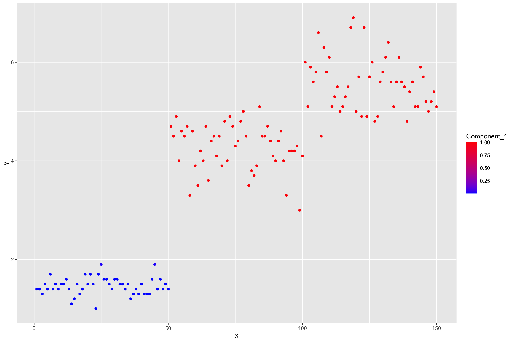
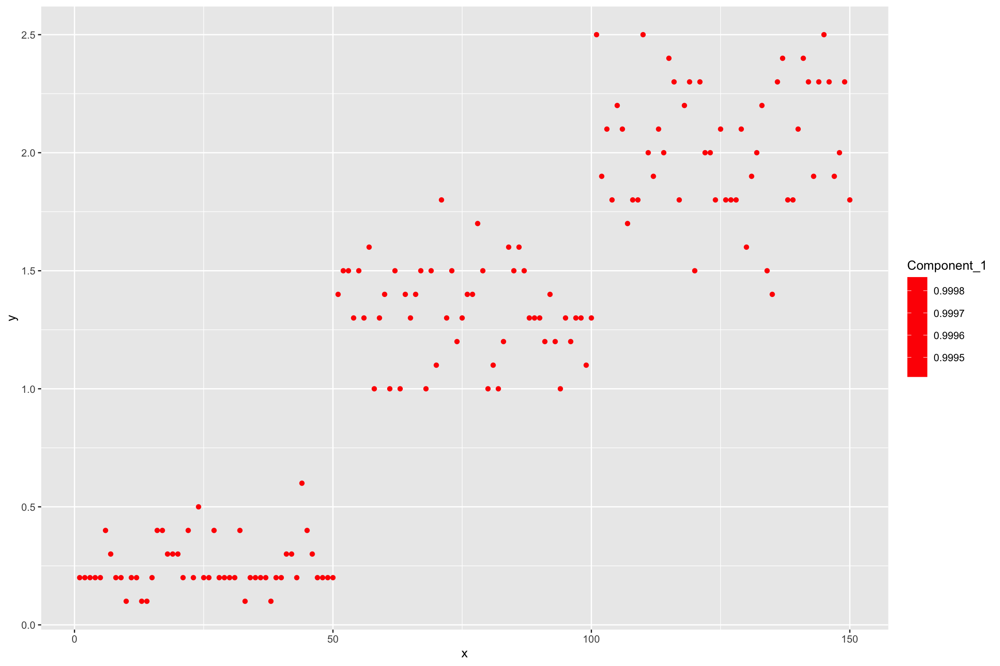
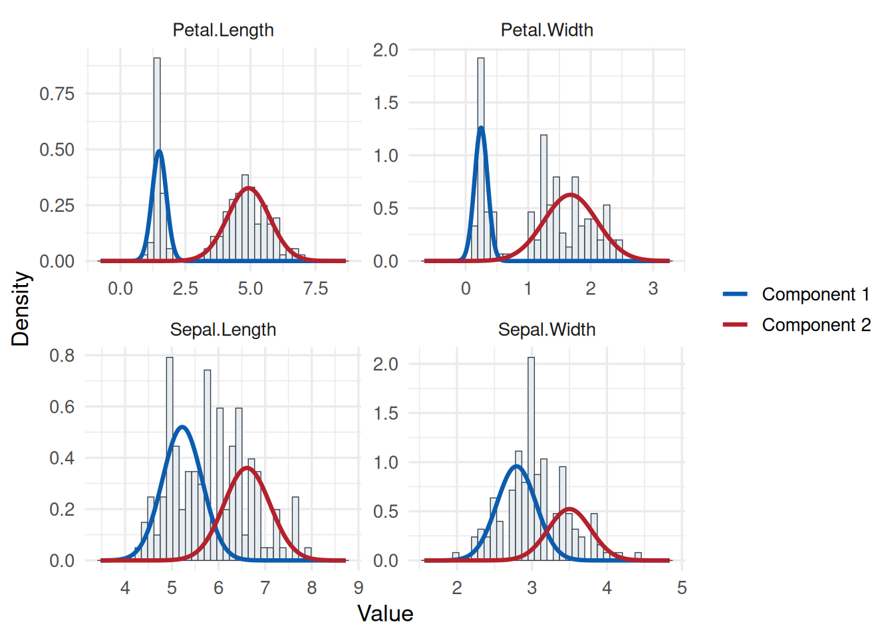

library(pacman)
p_load(ggplot2, knitr, plotly, lubridate, tidyverse, rstan)
# load dataset
data(iris)
# check out features and labels
glimpse(iris)Clustering
1 Clustering
Clustering or Unsupervised Learning deals with learning grouping structures from unlabelled data.
Unlabelled data means the absense of trait or phenotypic observations in a breeding context while having features available on a set of individuals.
Illustration on a dataset that contains features and labels. The features here are Sepal.Length,Sepal.Width,Petal.Length and Petal.Width. The labels for those feature observations are the Species. The labels therefore give us a grouping category in this case.
data(iris)
kable(head(iris), digits = 2)| Sepal.Length | Sepal.Width | Petal.Length | Petal.Width | Species |
|---|---|---|---|---|
| 5.1 | 3.5 | 1.4 | 0.2 | setosa |
| 4.9 | 3.0 | 1.4 | 0.2 | setosa |
| 4.7 | 3.2 | 1.3 | 0.2 | setosa |
| 4.6 | 3.1 | 1.5 | 0.2 | setosa |
| 5.0 | 3.6 | 1.4 | 0.2 | setosa |
| 5.4 | 3.9 | 1.7 | 0.4 | setosa |
Now we treat the features as coming from unlabelled individuals, meaning we dont have information on the grouping factor (Species)
# load dataset
data(iris)
# check out features and labels
glimpse(iris %>% select(-Species))kable(head(iris[, c("Sepal.Length", "Sepal.Width", "Petal.Length", "Petal.Width")]), digits = 2)| Sepal.Length | Sepal.Width | Petal.Length | Petal.Width |
|---|---|---|---|
| 5.1 | 3.5 | 1.4 | 0.2 |
| 4.9 | 3.0 | 1.4 | 0.2 |
| 4.7 | 3.2 | 1.3 | 0.2 |
| 4.6 | 3.1 | 1.5 | 0.2 |
| 5.0 | 3.6 | 1.4 | 0.2 |
| 5.4 | 3.9 | 1.7 | 0.4 |
Now we are left with a set of features without associated labels. This is a common situation in clustering settings in which we try to infer data structure from observed features while having non or questionable grouping labels.
1.1 Univariate Clustering
An initial approach is to investigate the indivudal features in isolation from each other and try to infer a grouping structure.
dplot = pivot_longer(iris, -Species, names_to = "Feature", values_to = "Value")
p = ggplot(dplot, aes(x = Value)) +
geom_histogram(aes(y = ..density.., fill = Feature), bins = 40) +
geom_density(color = "#b3212d", linewidth = 1.1) +
facet_wrap(~ Feature)
pdplot = stack(iris[, c("Sepal.Length", "Sepal.Width", "Petal.Length", "Petal.Width")])
colnames(dplot) = c("Value", "Feature")
ggplot(dplot, aes(x = Value)) +
geom_histogram(
aes(y = after_stat(density)),
bins = 40,
fill = "#d9e2e7",
color = "#374151",
linewidth = 0.25
) +
geom_density(color = "#b3212d", linewidth = 1.1) +
facet_wrap(~ Feature, scales = "free") +
labs(x = "Value", y = "Density")
Some features indicate that the data had been generated not from a single normal process, but potentially a series of processes. In that case, we can attempt to cluster the individual observations by fitting a normal mixture model to one feature at a time.
\[ p(\mathbf{x}) = \sum_{i=1}^{K} \lambda_i f_i(\mathbf{x}), ~~~~~~ with \sum \boldsymbol{\lambda} = 1. \]
Univariate normal distribution: \(f(x) \sim N(\mu, \sigma^2)\), \(\mu\) is a single location parameter - the mean and \(\sigma^2\) is a common variance component.
1.1.1 Implement the k-mixture model in Stan
# some random data
set.seed(100)
N <- 1000
# mixture probability for the first component
theta <- 0.3
mu1 <- 5
mu2 <- 15
sd1 <- 1
sd2 <- 2
y <- ifelse(runif(N) < theta, rnorm(N, mu1, sd1), rnorm(N, mu2, sd2))
dat = list(
N = length(y),
y = y,
k = 2 # number of mixture components
)
dplot = as.data.frame(dat)
# plot the raw data
ggplot(dplot, aes(x = y)) +
geom_histogram(aes(y = ..density..), bins = 50, fill = "white", color = 1) +
geom_density(color = "#b3212d", linewidth = 1.1)
# stan program for mixture model of k normal distributions
hcode =
"
data {
int<lower=1> N;
int<lower=1> k;
real y[N];
}
parameters {
simplex[k] theta;
real mu[k];
real<lower=0> tau[k];
}
model {
real ps[k];
for (i in 1:k){
mu[i] ~ normal(0, 1.0e+2);
}
for(i in 1:N){
for(j in 1:k){
ps[j] <- log(theta[j]) + normal_log(y[i], mu[j], tau[j]);
}
increment_log_prob(log_sum_exp(ps));
}
tau ~ cauchy(0,5);
}
"
hlm = stan(
model_name = "Gauss mixture",
model_code = hcode,
data = dat,
iter = 2000,
warmup = 1500,
verbose = FALSE,
chains = 1
)
# extract the posteriors of our mixture components
out <- rstan::extract(hlm)
# posterior means
thetas = colMeans(out$theta)
mus = colMeans(out$mu)
sds = colMeans(out$tau)
# small function that gives us the probabilities of every data point to belonging
# of either of the mixture components
GetProbNormalMixture <- function(y, lambda, mu, sigma) {
lik <- array(as.numeric(NA), dim = c(length(y), length(lambda)))
for(i in 1:length(lambda)) lik[,i] <- lambda[i] * dnorm(y,mu[i],sigma[i])
probs <- lik / rowSums(lik)
return(probs)
}
# normal density times constant
dnormLambda <- function(x, lambda, mu , sigma) {
return(lambda * dnorm(x, mu, sigma))
}
probs = GetProbNormalMixture(y = y,
lambda = thetas,
mu = mus,
sigma = sds
)
dplot = tibble(
x = 1:length(y),
y = y,
prob_one = probs[,1],
prob_two = probs[,2]
)
# plot the raw data and color by probability of belonging to mixture component one
ggplot(dplot, aes(y = y, x = x)) +
geom_point(aes(color = prob_one)) +
scale_colour_gradient2(low = 'green', mid = 'blue', high = 'red')
p <- ggplot(dplot, aes(y))
p <- p + geom_histogram(
aes(y = after_stat(density)),
bins = 50,
fill = "#e8edf0",
color = "#374151",
linewidth = 0.25
)
# add the densitites of the components
colors = hcl.colors(n = length(thetas), palette = "Blue-Red")
# add the densities
for(i in 1:length(thetas)) {
p <- p + stat_function(
fun = dnormLambda,
args = list(lambda = thetas[i], mu = mus[i], sigma = sds[i]),
color = colors[i],
linewidth = 1.25
)
}
p
sim_density = rbind(
data.frame(
component = "Component 1",
y = seq(min(y) - sd(y), max(y) + sd(y), length.out = 400),
lambda = theta,
mu = mu1,
sigma = sd1
),
data.frame(
component = "Component 2",
y = seq(min(y) - sd(y), max(y) + sd(y), length.out = 400),
lambda = 1 - theta,
mu = mu2,
sigma = sd2
)
)
sim_density$density = with(sim_density, lambda * dnorm(y, mu, sigma))
ggplot(dplot, aes(x = y)) +
geom_histogram(
aes(y = after_stat(density)),
bins = 50,
fill = "#e8edf0",
color = "#374151",
linewidth = 0.25
) +
geom_line(
data = sim_density,
aes(x = y, y = density, color = component),
linewidth = 1.25,
inherit.aes = FALSE
) +
scale_color_manual(values = c("Component 1" = "#0b5cad", "Component 2" = "#b3212d")) +
labs(x = "y", y = "Density", color = NULL)
1.1.2 Apply the mixture model to the iris data
First, bring everything together into a function that we can call conviently on different data and different number of mixture components
# small function that gives us the probabilities of every data point to belonging
# of either of the mixture components
GetProbNormalMixture <- function(y, lambda, mu, sigma) {
lik <- array(as.numeric(NA), dim = c(length(y), length(lambda)))
for(i in 1:length(lambda)) lik[,i] <- lambda[i] * dnorm(y,mu[i],sigma[i])
probs <- lik / rowSums(lik)
return(probs)
}
# normal density times constant
dnormLambda <- function(x, lambda, mu , sigma) {
return(lambda * dnorm(x, mu, sigma))
}
RunMixture = function(y, k = 2, niter = 2000, warmup = 1500, seed = NULL) {
# stan program for mixture model of k normal distributions
hcode =
"
data {
int<lower=1> N;
int<lower=1> k;
real y[N];
}
parameters {
simplex[k] theta;
real mu[k];
real<lower=0> tau[k];
}
model {
real ps[k];
for (i in 1:k){
mu[i] ~ normal(0, 1.0e+2);
}
for(i in 1:N){
for(j in 1:k){
ps[j] <- log(theta[j]) + normal_log(y[i], mu[j], tau[j]);
}
increment_log_prob(log_sum_exp(ps));
}
tau ~ cauchy(0,5);
}
"
dat = list(
N = length(y),
y = y,
k = k # number of mixture components
)
hlm = stan(
model_name = "Gauss mixture",
model_code = hcode,
data = dat,
iter = niter,
warmup = warmup,
verbose = FALSE,
chains = 1,
seed = seed
)
# extract the posteriors of our mixture components
out <- rstan::extract(hlm)
# posterior means
thetas = colMeans(out$theta)
mus = colMeans(out$mu)
sds = colMeans(out$tau)
mc = tibble(
thetas = thetas,
mus = mus,
sds = sds
)
probs = GetProbNormalMixture(y = y,
lambda = thetas,
mu = mus,
sigma = sds
)
dprobs = as.data.frame(probs)
colnames(dprobs) = paste("Component", 1:k, sep = "_")
dprobs$y = y
dprobs$x = 1:nrow(dprobs)
# plot the raw data and color by probability of belonging to mixture component one
p_raw = ggplot(dprobs, aes(y = y, x = x)) +
geom_point(aes(color = Component_1)) +
scale_colour_gradient2(low = 'green', mid = 'blue', high = 'red')
p <- ggplot(dprobs, aes(y))
p <- p + geom_histogram(
aes(y = after_stat(density)),
bins = 50,
fill = "#e8edf0",
color = "#374151",
linewidth = 0.25
)
# add the densitites of the components
colors = hcl.colors(n = length(thetas), palette = "Blue-Red")
# add the densities
for(i in 1:length(thetas)) {
p <- p + stat_function(
fun = dnormLambda,
args = list(lambda = thetas[i], mu = mus[i], sigma = sds[i]),
color = colors[i],
linewidth = 1.25
)
}
print(p)
return(
list(
mc = mc,
dprobs = dprobs,
thetas = thetas,
mus = mus,
sds = sds,
p_raw = p_raw,
p_density = p
)
)
}Now apply the function on the different features of the iris data
seed = 242151
# prepare data for stan run
# pick a feature
sl_mixture = RunMixture(iris$Sepal.Length, k = 2, seed = seed)
sw_mixture = RunMixture(iris$Sepal.Width, k = 2, seed = seed)
pl_mixture = RunMixture(iris$Petal.Length, k = 2, seed = seed)
pw_mixture = RunMixture(iris$Petal.Width, k = 2, seed = seed)
# check the different components
kable(sl_mixture$mc)
kable(sw_mixture$mc)
kable(pl_mixture$mc)
kable(pw_mixture$mc)
sl_mixture$p_raw
sw_mixture$p_raw
pl_mixture$p_raw
pw_mixture$p_raw
sl_mixture$p_density
sw_mixture$p_density
pl_mixture$p_density
pw_mixture$p_density



iris_features = iris[, c("Sepal.Length", "Sepal.Width", "Petal.Length", "Petal.Width")]
iris_density = do.call(
rbind,
lapply(names(iris_features), function(feature) {
out = mixture_preview(iris_features[[feature]], k = 2, seed = 242151)
out$Feature = feature
out
})
)
iris_long = stack(iris_features)
colnames(iris_long) = c("Value", "Feature")
ggplot(iris_long, aes(x = Value)) +
geom_histogram(
aes(y = after_stat(density)),
bins = 40,
fill = "#e8edf0",
color = "#374151",
linewidth = 0.25
) +
geom_line(
data = iris_density,
aes(x = Value, y = density, color = component),
linewidth = 1.15,
inherit.aes = FALSE
) +
scale_color_manual(values = c("Component 1" = "#0b5cad", "Component 2" = "#b3212d")) +
facet_wrap(~ Feature, scales = "free") +
labs(x = "Value", y = "Density", color = NULL)